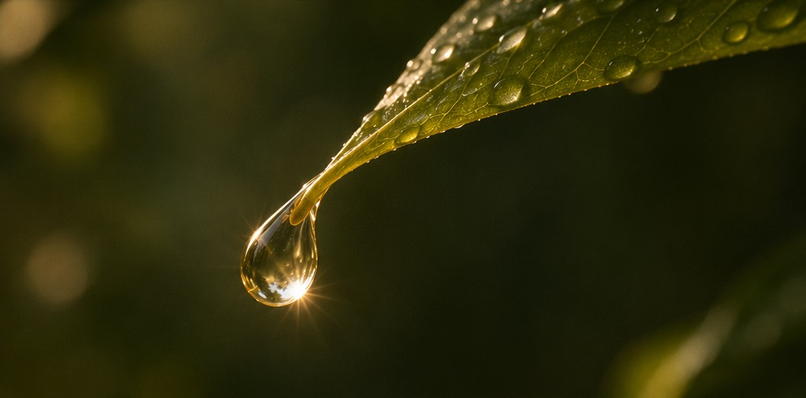

EAU DE PARFUM
花の、三つの表情。
朝の庭で開く白い花をイメージしたオードパルファム。
肌にのせた瞬間から、最後に残る余韻まで。

Bergamot
ベルガモットと青葉。葉の先に残る朝露のような、みずみずしい立ち上がり。
朝の庭で開く白い花をイメージしたオードパルファム。
肌にのせた瞬間から、最後に残る余韻まで。

ベルガモットと青葉。葉の先に残る朝露のような、みずみずしい立ち上がり。